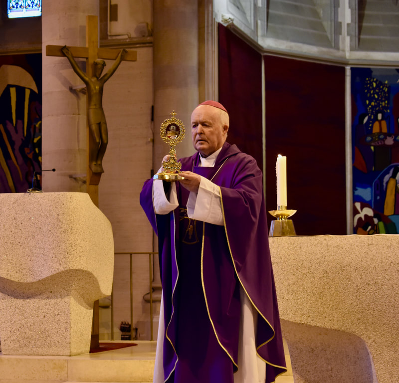
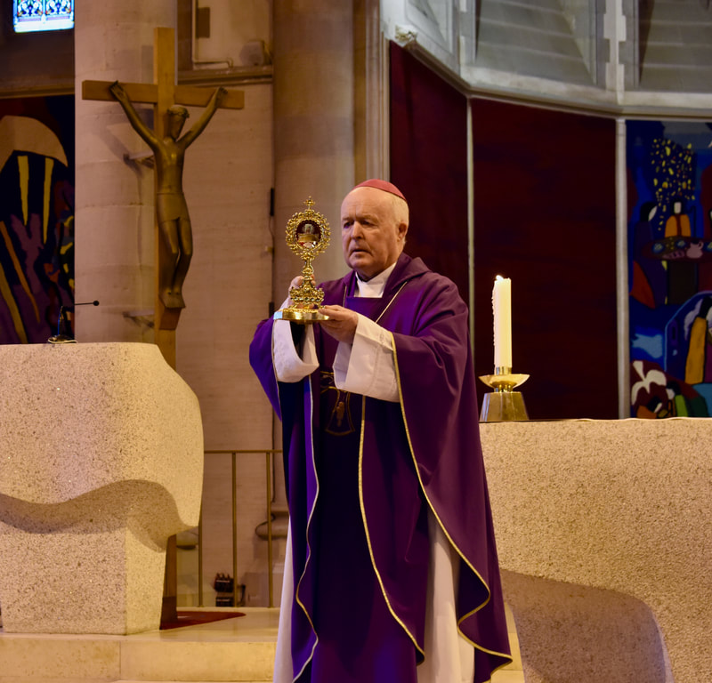

We are a small group of families who have been deeply moved and inspired by the life of Carlo Acutis. Working directly with the Archbishop of Assisi and Bishops of Ireland, want to share Carlo's story with as many people as we can!

Join us Carlo Acutis Canonisation Celebrations in Dublin
DATE: 27th April 2025
LOCATION: Phoenix Park, Archdiocese of Dublin, Cityquay Parish
Join us for this special event as we celebrate the life and legacy of Carlo Acutis. Witness the official recognition of his sainthood by the Catholic Church, live-streamed from St. Paul's Church, Arran Quay. This in-person event will be a memorable experience for all attendees. Don't miss out on this opportunity to be part of history. Come and be inspired by the remarkable story of Carlo Acutis.
Event Schedule:
7AM - 9AM Pilgrim Walk from the Papal Cross (Phoenix Park) to St. Paul's Church, Arran Quay, Dublin (Archdiocese of Dublin) - ALL WELCOME
9AM - 11AM Canonisation Event at St. Paul's Church, Archdiocese of Dublin Including live-stream of the Canonisation in Rome - Ticketed Event Only - Limited Tickets Available
11AM-1PM Celebrations in St. Paul's Church, Arran Quay, Dublin Live Music, Testimonies, Blessings, Eucharistic Miracles Exhibition, Refreshments, Carlo Acutis Official Song - ALL WELCOME
3PM-5PM Celebratory Mass at the Immaculate Heart of Mary Catholic Church, City Quay with live music provided afterward to celebrate - ALL WELCOME


 
